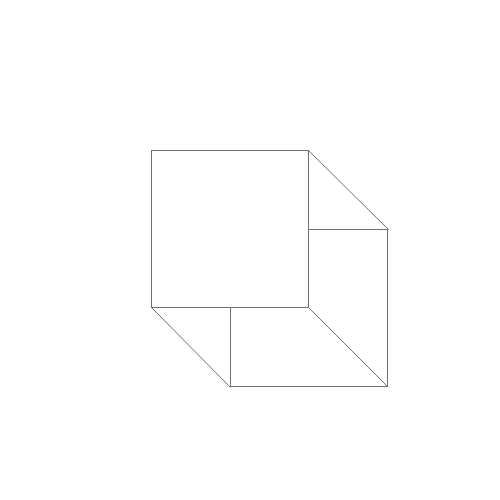

Instructions
- Open XD or whatever app you use.
- Create an artboard that is 500px tall and 500px wide.
- Inside the artboard, create a square by using the square shape tool that is 158px tall and 158 px wide and place it in the center.
- After that, click your square, copy, then paste it so there is now a duplicate square.
- Right click the duplicate, find where it says arrange, and send the second square to the back.
- Once you have done that, align the second square so that the top left corner is directly in the center of your original square.
- After you are done, select your line tool and draw lines connecting the visible corners of the two squares. The visible corners will be the top right corner and both the bottom left & right corners.
- Check if to see if the lines are connected and you’re all done.
- Send your work to ymonawer11@gmail.com
Original

Classmate Drawings